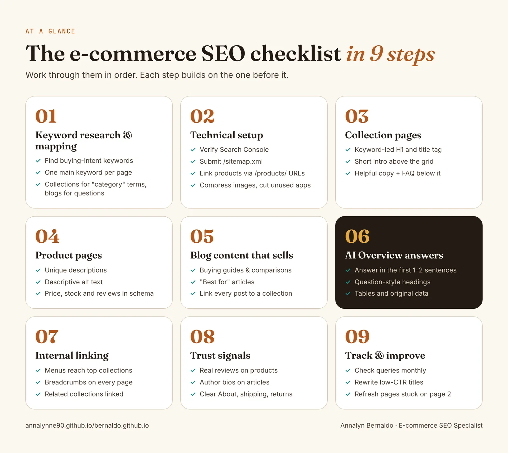
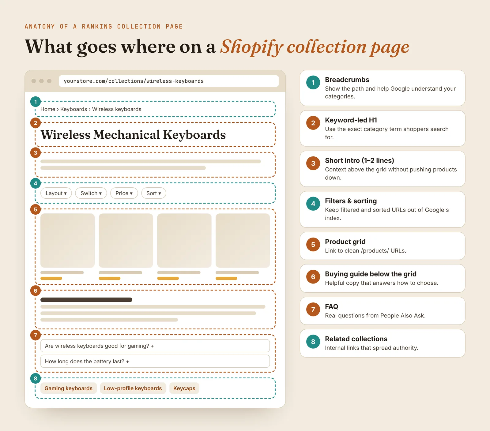

- Map one buying-intent keyword to each page. Category keywords go to collections, questions go to the blog.
- Collection pages are your best ranking opportunity. Give each one a keyword-led H1, a short intro and a buying guide with an FAQ below the products.
- Write unique product descriptions and check that your product schema shows price, stock and reviews.
- Answer questions in the first sentence or two to give your content a chance at Google AI Overviews.
- Check Search Console every month and rewrite titles on pages with lots of impressions but few clicks.
Most Shopify stores don't have an SEO problem so much as an order of operations problem. They write blog posts before their collection pages are optimized, or install SEO apps before they've decided which keyword each page should rank for.
This checklist puts the work in the order that moves rankings and sales fastest. I use it on client stores in tech, baby care, beauty and outdoor living, and it's the process behind articles that reached #1 on Google and were cited in AI Overviews.

1. Keyword research & mapping
Goal: every important page targets one main keyword, and no two pages compete for the same one.
- Start with buying intent. Look for category terms ("wireless mechanical keyboards"), modifiers ("for gaming", "for newborns", "under ₱5,000") and comparisons ("red vs brown switches").
- Match the keyword to the page type. If Google shows product grids for a search, it belongs on a collection page. If it shows articles, it belongs on the blog.
- Build a keyword map. A simple spreadsheet with columns for URL, main keyword, secondary keywords and search intent stops you from creating two pages for the same search.
- Use the right tools. Ahrefs or Semrush for volume and difficulty, and Google's own People Also Ask and related searches for real shopper questions.
2. Technical setup
Shopify handles a lot of technical SEO for you, but a few things still need checking:
- Verify Google Search Console and submit your sitemap. Shopify creates it automatically at
yourstore.com/sitemap.xml. - Fix duplicate product URLs. Shopify products can be reached at both
/products/itemand/collections/name/products/item. The canonical tag points to/products/, but many themes still link to the longer version from collection grids. Ask your developer to link straight to/products/URLs so Google doesn't waste time crawling duplicates. - Leave filter and sort URLs out of the index. Shopify's default
robots.txtalready blocks many of them. Only editrobots.txt.liquidif you know exactly what you're changing. - Speed up the store. Compress images, remove apps you no longer use (many leave code behind), and test key pages in PageSpeed Insights on mobile.
- Redirect old URLs. When you delete or rename a product or collection, add a 301 redirect in Content → Menus → URL redirects (or Online Store → Navigation in older admin layouts).
3. Collection pages
Collection pages target the searches with the most buying intent, so they're usually the highest-value pages in a store. Most of them only show a heading and a product grid.

- H1: the exact category term shoppers search for, such as "Wireless Mechanical Keyboards" rather than "Shop Wireless".
- Title tag and meta description: edit these in the Search engine listing section at the bottom of each collection. Keep titles under about 60 characters and lead with the keyword.
- Short intro above the grid: one or two sentences, so products stay visible on mobile.
- Buying guide below the grid: how to choose, key differences and who each option is for. This is where most of your ranking copy lives.
- FAQ: three to five real questions from People Also Ask.
- Related collections: link to neighboring categories to keep shoppers and Google moving through the store.
For a full walkthrough with a template, read my guide to collection page SEO.
Tip: If your theme can't show text below the product grid, a developer can add a metafield-powered section in an hour or two. It's one of the highest-return changes you can make.
4. Product pages
- Write unique descriptions. Manufacturer copy appears on dozens of other sites. Add who the product is for, how it compares and what's in the box.
- Use clear titles. Brand + product type + key feature, for example "Keychron K2 Wireless Mechanical Keyboard, Hot-Swappable".
- Add alt text to every image. In Shopify, click a product image and choose Add alt text. Describe what's in the image naturally.
- Check your product schema. Most modern themes output Product structured data. Test a product URL in Google's Rich Results Test and make sure price, availability and reviews appear.
- Join Google's free listings. Connecting Google Merchant Center (through Shopify's Google & YouTube app) can show your products in the Shopping tab at no cost.
5. Blog content that sells
A store blog only helps sales when it answers the questions people ask before they buy. The best-performing formats I've seen are:
- Comparisons: "red switch vs brown switch", "cotton vs bamboo baby clothes".
- Buying guides: "how to choose a baby carrier", "best keyboard switches for typing".
- Visual guides and tools: charts, calculators and identification guides that earn links and repeat visits.
Every post should link to the collection or product that solves the reader's problem, using the collection's keyword as anchor text.

A content cluster built around switch comparisons reached #1 for "mechanical keyboard color switch" with a featured snippet, and grew impressions by up to +2,264% across the group. One of the articles was later featured by Backlinko as an example of a great e-commerce blog.
6. AI Overview answers
Google's AI Overviews now sit above the regular results for many shopping questions. Nobody can guarantee a citation, but content written this way gives you the best chance:
- Answer first. Put a direct, one-to-two-sentence answer right under the heading, then explain.
- Use question-style headings that match how people search ("Are brown switches better than red?").
- Add tables for comparisons, specs and sizes. They're easy for Google to read and quote.
- Include first-hand details such as testing notes, photos and real numbers that other pages don't have.
I cover this step in depth in AI Overview SEO for e-commerce.

The Keychron guide to mechanical keyboard color switches is the top organic result and is cited in both the AI Overview and People Also Ask. A sister article on "red switch vs brown switch" ranked #2 with an AI Overview citation too.
7. Internal linking
- Your main menu should reach every important collection in one or two clicks.
- Turn on breadcrumbs if your theme supports them.
- Link related collections to each other, and link blog posts to collections.
- Use descriptive anchor text ("wireless mechanical keyboards") instead of "click here" or "shop now".
8. Trust signals
Google wants to send shoppers to stores they can trust, and shoppers check the same things:
- Real product reviews, displayed on the page and included in your schema.
- An author name and short bio on every article, especially for health, baby and money topics.
- Clear About, Contact, Shipping and Returns pages that are linked in the footer.
9. Track & improve
SEO isn't finished when a page is published. Once a month, open Google Search Console's Performance report and check:
- High impressions, low CTR: the page shows up but people don't click. Rewrite the title and meta description.
- Positions 8–20: pages stuck near the bottom of page one or on page two. Add depth, an FAQ and more internal links.
- New queries: searches you weren't targeting. Add a section that answers them, or create a new page.

New guides and tool pages reached 50K+ impressions in two months, and the core landing page gained +145% organic clicks after the monthly review loop above.
Checklist summary
Copy this into your project tracker and tick each item off per page.
| Step | What to check | Where in Shopify |
|---|---|---|
| 1. Keywords | One main keyword per page, mapped in a spreadsheet | Outside Shopify (Ahrefs, Semrush) |
| 2. Technical | Search Console verified, sitemap submitted, /products/ links, speed | Theme code, Apps, Settings |
| 3. Collections | Keyword H1, title, intro, buying guide, FAQ | Products → Collections |
| 4. Products | Unique copy, alt text, schema, Merchant Center | Products → each product |
| 5. Blog | Comparisons and guides that link to collections | Content → Blog posts |
| 6. AI Overviews | Answer-first sections, question headings, tables | Any page or post |
| 7. Internal links | Menus, breadcrumbs, related collections | Content → Menus |
| 8. Trust | Reviews, author bios, policy pages | Apps, Pages, Settings → Policies |
| 9. Tracking | Monthly CTR and position review | Google Search Console |
Frequently asked questions
What is the most important part of e-commerce SEO?
Keyword mapping and collection pages. Collection pages target the category searches with the most buying intent, so getting the right keyword on the right collection, with a clear H1, title tag and helpful copy, usually moves revenue faster than any other SEO task.
Is Shopify good for SEO?
Yes. Shopify handles the basics for you: an automatic sitemap, HTTPS, canonical tags on product pages and editable titles and meta descriptions. The common problems are internal links to duplicate product URLs, slow pages from too many apps, and thin or copied product descriptions.
How long does e-commerce SEO take to work?
Most stores see impressions start to grow within 4 to 8 weeks and stronger ranking and traffic gains within 3 to 6 months. For one baby-care store, new pages reached more than 50,000 impressions in two months.
Should a Shopify store have a blog?
Yes, if the blog answers the questions shoppers ask before they buy, such as comparisons, buying guides and how-to-choose articles, and every post links to the matching collection or product. A blog of general news rarely helps sales.
How do I get my store's content into Google AI Overviews?
No one can guarantee a placement, but you improve your chances by answering the question clearly in the first one or two sentences, using question-style headings, adding comparison tables and including first-hand details. Articles written this way for Keychron were cited in AI Overviews.

Annalyn Bernaldo
Annalyn is an e-commerce SEO specialist in the Philippines who writes content that ranks #1 on Google and gets cited in AI Overviews. Her Keychron article was featured by Backlinko, and she was named the #2 SEO expert in Cebu.